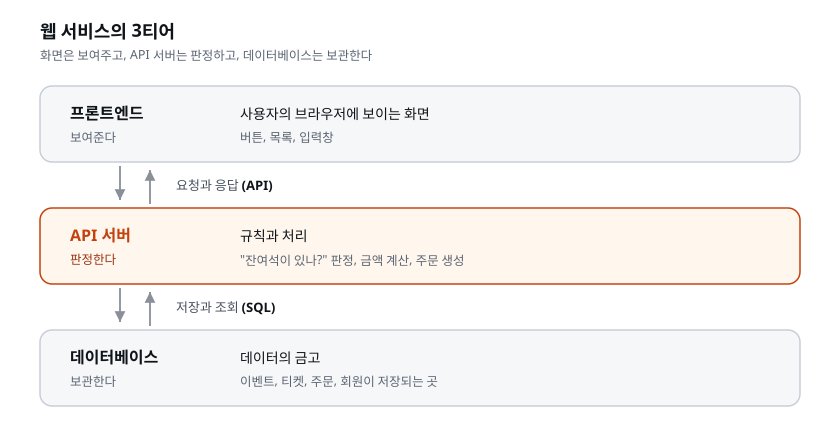
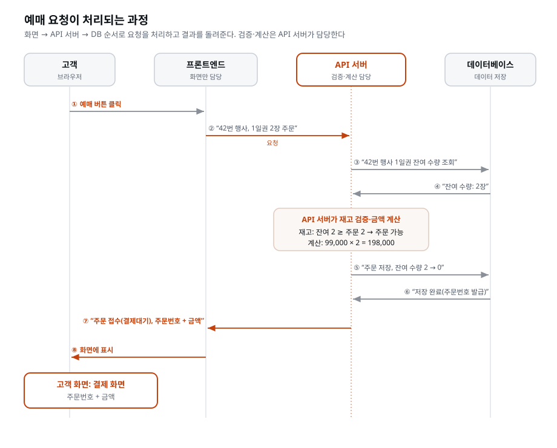
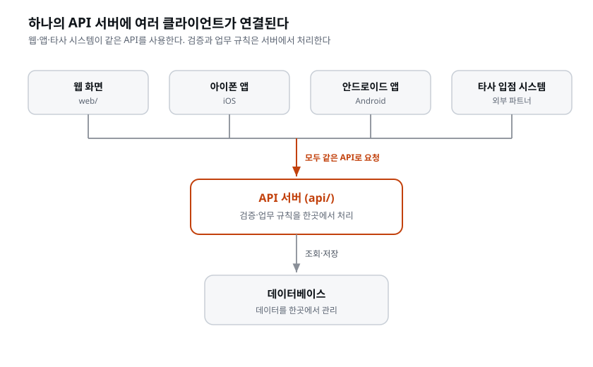
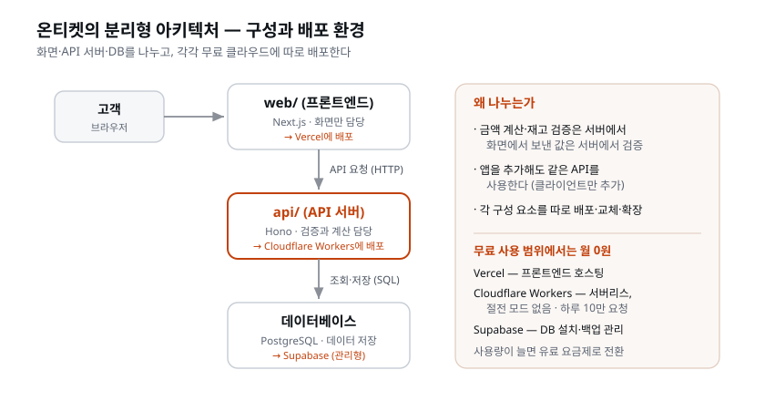

이 장을 마치면 서비스의 3티어인 화면(프론트엔드)·API 서버·데이터베이스의 역할을 설명할 수 있다. 온티켓을 분리형으로 만들기로 한 결정과 근거를 ADR(결정 기록) 문서에 남기고, 사용할 클라우드 서비스인 Vercel·Cloudflare Workers·Supabase의 역할도 구분할 수 있다.
아키텍처는 서비스를 어떤 덩어리들로 나누고, 그 덩어리들을 어떻게 연결할지에 대한 설계다. 건물로 치면 평면도 이전의 구조 설계 — 몇 개 동으로 지을지, 동 사이를 어떻게 이을지다. 벽지(디자인)는 나중에 바꿀 수 있지만 동 구조는 바꾸기 어렵다. 그래서 코드를 쓰기 전에 정하고, 정한 근거를 남긴다.
'아키텍처(architecture)'라는 말 자체가 원래 건축을 가리킨다. 건축가(architect)가 집을 짓기 전에 구조를 설계하듯, 소프트웨어에서도 코드 한 줄을 치기 전에 전체 구조를 설계하는 사람을 소프트웨어 아키텍트, 그 설계를 소프트웨어 아키텍처라고 부른다. 비유가 우연이 아니다 — 둘 다 "한번 세우면 뜯어고치기 어려운 뼈대를, 짓기 전에 정한다"는 공통점 때문에 같은 단어를 빌려 쓴다.
왜 하필 코드를 쓰기 전에 정해야 하는지 조금 더 파고들자. 소프트웨어에는 '바꾸기 쉬운 것'과 '바꾸기 어려운 것'이 있다. 버튼 색깔이나 문구는 5초면 바꾼다. 반면 "화면과 서버를 한 덩어리로 지었는데 이제 와서 둘로 쪼개자"는 결정은 이미 짠 코드 대부분을 다시 손대야 하는 큰 공사다. 아키텍처는 이 바꾸기 어려운 쪽에 속한다. 그래서 아직 코드가 없어 되돌리는 데 드는 비용이 0에 가까운 시점 — 바로 지금 — 에 정하는 것이 비용이 가장 적게 든다. 설계 결정들 가운데 이 장이 코드가 한 줄도 없는 시점에 놓인 이유가 이것이다.
이 장이 놓인 자리도 한 번 짚어 두자. docs/PRD.md로 '무엇을 만들지'가,
docs/화면기획서.md로 '무엇을 보여줄지'가 정해졌다. 이제 정할 것은 그것을 어떤
구조 위에 지을지다. 이 결정은 데이터베이스 설계와 API 명세서보다 앞선다. API
서버를 따로 둘지, 데이터를 어느 서비스에 저장할지가 정해져야 데이터를 어디에 어떻게
설계할지, 화면과 서버 사이의 요청·응답 규칙(API 명세서)을 어떻게 작성할지가
정해지기 때문이다. 땅의 구획을 먼저 나누고, 그다음에 각 구획에 무엇을 놓을지
정하는 순서다.
[짚고 가기] "지금 결정 안 하고 만들면서 정하면 안 되나?"라는 의문이 들기 쉽다. 만들면서 정해도 된다. 다만 그렇게 하면 나중에 구조를 바꿀 때 이미 짠 것을 버리게 된다. 리모델링에 빗대면 잘 와닿는다 — 도면 단계에서 방 하나 옮기는 건 지우개질이지만, 벽을 다 세운 뒤 옮기는 건 망치질이다. 지금은 지우개질만으로 끝낼 수 있는 유일한 시점이다.
거의 모든 웹 서비스는 세 티어(tier)로 이루어진다.

이렇게 셋으로 나눈 구조를 3티어 아키텍처(3-tier architecture) 라 한다. 수십 년 된 개념이고, 은행 웹사이트든 쇼핑몰이든 SNS든 그 뼈대는 대부분 이 셋으로 설명된다. 용어를 외울 필요는 없지만, "내가 지금 배우는 건 특정 유행이 아니라 웹의 표준 골격"이라는 감각은 가져가면 좋다.
각 티어를 사람 사는 곳에 빗대면 이렇게 이해된다.
| 티어 | 하는 일 | 비유 | 온티켓에서 |
|---|---|---|---|
| 프론트엔드 | 보여주고 입력받는다 | 매장의 판매 창구·진열대 | 이벤트 목록·좌석 선택·결제 화면 |
| API 서버 | 규칙대로 판정·처리한다 | 뒤에서 규정을 따지는 사무실 | 잔여석 확인, 금액 계산, 주문 생성 |
| 데이터베이스 | 저장하고 꺼내 준다 | 자물쇠 달린 창고·금고 | 이벤트·티켓·주문·회원 기록 |
세 티어 사이를 오가는 '말'도 티어마다 다르다. 프론트엔드와 API 서버는 API라는 약속된 형식으로 대화하고, API 서버와 데이터베이스는 SQL이라는 언어로 대화한다. SQL(Structured Query Language)은 데이터베이스에게 "이 데이터를 저장해 줘", "이 조건에 맞는 것을 꺼내 줘"라고 시키는 전용 언어다. 지금은 "티어마다 서로 통하는 말이 정해져 있다" 정도만 잡아 두면 된다. API가 무엇인지는 바로 아래에서 풀고, 요청의 종류(메서드)와 결과 번호(상태 코드) 같은 세부는 API 명세서를 쓸 때 자세히 다룬다. SQL은 데이터베이스를 설계할 때 만난다.
'API'는 Application Programming Interface의 약자로, 우리말로 옮기면 '프로그램끼리 주고받는 창구'다. 사람이 매장 창구에서 "1일권 2장 주세요"라고 말하듯, 프론트엔드가 API 서버에게 "이벤트 42번 잔여석 알려줘", "이 주문 만들어줘"라고 정해진 형식으로 말을 건네는 통로가 API다. 창구가 정해져 있으면 좋은 점은, 창구만 그대로면 뒤쪽을 얼마든지 바꿔도 앞쪽은 모른다는 것이다. 이 성질이 뒤에서 '분리형'을 고르는 핵심 근거가 되니 기억해 두자.
온티켓에서 고객이 예매 버튼을 누르면 무슨 일이 일어나는지 따라가 보자.
이 흐름을 좀 더 촘촘히 뜯어보면, 한 번의 예매 클릭이 실제로는 여러 번의 왕복으로 이루어진다는 걸 알 수 있다.

여기서 두 가지를 눈여겨보자. 첫째, 프론트엔드는 "주문할게"라고 부탁만 했지, 잔여석이 몇 개인지, 금액이 얼마인지 스스로 정하지 않았다. 둘째, 데이터베이스는 API 서버가 시키는 대로 저장하고 꺼내 주기만 했지, "2장 팔아도 되나?"를 따지지 않았다. 판단은 오직 가운데 티어, API 서버에서만 일어난다.
역할 분담에 주목하자. 화면은 보여주고, 서버는 판정하고, DB는 보관한다. "금액 계산을 어디서 하나?"라는 질문의 답이 여기서 나온다 — 서버다. 화면(고객의 브라우저)에서 계산하면 악의적인 고객이 금액을 조작할 수 있다. 규칙과 돈에 관한 판정은 전부 서버의 일이다.
이 원리는 이 장에서 가장 중요한 한 문장이라 조금 더 파고들 가치가 있다. 핵심은 프론트엔드는 고객의 손안에 있다는 사실이다.
프론트엔드 코드는 고객의 브라우저로 내려가서 고객의 컴퓨터에서 실행된다. 즉 고객이 마음만 먹으면 그 코드를 들여다보고, 값을 바꾸고, 가짜 요청을 만들어 보낼 수 있다. 브라우저에는 개발자 도구라는 게 기본으로 들어 있어서, 전문가가 아니어도 "화면에 표시된 199,000원을 1,000원으로 바꿔서 서버에 보내기"가 생각보다 쉽다.
구체적인 사고 시나리오를 상상해 보자.
그래서 규칙은 하나로 정리된다. 화면이 보낸 값은 절대 그대로 믿지 않는다. 금액도, 재고도, 권한도 서버가 자기 손으로 다시 확인한다. 화면이 "199,000원"을 보내와도 서버는 무시하고, 이벤트 번호와 수량만 받아서 서버가 가진 진짜 가격으로 다시 곱한다. 화면이 "2장 예매 가능"이라고 우겨도 서버는 무시하고 DB에게 직접 "지금 잔여석 몇이야?"를 물어 다시 판정한다.
이 발상에는 정식 이름이 있다. "클라이언트를 신뢰하지 마라(never trust the client)"는 웹 보안의 오래된 제1원칙이다. 온티켓처럼 돈과 재고가 걸린 서비스에서는 이 원칙이 곧 서비스의 생명선이다. 그리고 이 원칙을 코드 몇 줄의 약속이 아니라 아예 구조로 강제하려는 것이, 잠시 뒤 온티켓을 분리형으로 짓는 첫 번째 근거가 된다.
[짚고 가기] 이 대목은 직접 해 보면 확 와닿는다. 아주 단순한 예면 충분하다 — 화면에서 계산한 금액을 그대로 서버에 보내는 페이지를 하나 띄워 두고, 브라우저 개발자 도구(F12)로 요청 값을 바꿔 1원 결제가 통과되는 걸 확인해 보라. "코드를 몰라도 이 정도는 바꾼다"는 걸 눈으로 보면, '판정은 서버가'가 잔소리가 아니라 방어라는 게 몸에 남는다. 직접 못 해 보더라도 시나리오만 머릿속으로 짚어 봐도 된다. 골목 라이브의 초과 판매 사고를 여기에 겹쳐 보면 온티켓 세계관 안에서 이유가 살아난다 — "그때 매진 판정을 화면에서 했다면 딱 이렇게 뚫렸을 것"인 셈이다.
3티어를 코드로 지을 때, 크게 두 가지 방식이 있다.
여기서 선택할 것은 세 티어 중 프론트엔드와 API 서버를 한 프로젝트에 둘지, 별도 프로젝트로 나눌지다. 데이터베이스는 어느 쪽이든 보통 따로 있는 따로 떨어진 티어이므로 이 갈림길의 쟁점이 아니다. 즉 통합형과 분리형의 진짜 질문은 "화면과 규칙을 한 프로젝트로 묶을까, 두 프로젝트로 나눌까"이다.
통합형 — 프론트엔드와 API 서버를 한 프로젝트에 담는다. 요즘 프레임워크 (Next.js 등)는 한 프로젝트 안에서 화면과 API를 같이 만들 수 있다. 배포도 한 번. 작고 빠르다.
통합형을 조금 더 그려 보면 이렇다. 폴더 하나 안에 화면을 그리는 파일들과 요청을 처리하는 파일들이 나란히 살고, 명령 한 번으로 둘이 함께 인터넷에 올라간다. '프레임워크(framework)'는 직역하면 '뼈대·틀'인데, 매번 처음부터 짜야 할 공통 구조를 미리 갖춰 둔 개발 도구 모음을 말한다. Next.js 같은 프레임워크는 이 틀 안에 화면용 자리와 API용 자리를 둘 다 마련해 두어서, 한 프로젝트로 두 티어를 동시에 짓게 해 준다. 이것이 통합형이 '작고 빠른' 이유다 — 준비된 틀 하나로 끝난다.
분리형 — 프론트엔드와 API 서버를 별도 프로젝트로 나누고 각각 배포한다. 회사들이 실제로 쓰는 구조다. 앱 팀과 서버 팀이 따로 일할 수 있고, 나중에 모바일 앱이 생겨도 같은 API 서버를 그대로 쓴다.
분리형의 핵심 그림은 "API 서버 하나에 클라이언트 여럿"이다. 클라이언트는 API를 불러 쓰는 쪽, 곧 웹 화면·앱·다른 회사 시스템이다. 앞에서 API를 '정해진 창구'라고 했던 걸 떠올리자. 창구(API)만 그대로면 그 창구를 이용하는 고객은 웹 화면이든, 아이폰 앱이든, 안드로이드 앱이든, 심지어 다른 회사의 시스템이든 상관없다. 분리형은 이 성질을 정면으로 활용한다.

통합형은 이 그림에서 맨 위 화면 '하나'와 API 서버가 한 몸으로 붙어 있는 형태다. 화면이 하나뿐이고 앞으로도 그럴 거라면 붙여 두는 편이 간단하다. 하지만 클라이언트가 여럿이 될 가능성이 있다면, 규칙을 담은 API 서버를 따로 떼어 두는 편이 미래에 유리하다.
| 비교 항목 | 통합형 | 분리형 |
|---|---|---|
| 프로젝트 수 | 1개 | 2개 (web/ + api/) |
| 배포 | 1번 | 2번 (각자 배포) |
| 시작 난이도 | 낮다 | 조금 높다 (연결 설정 필요) |
| 확장 | 화면과 서버가 묶여 있다 | 각자 확장·교체 가능 |
| 다른 클라이언트(앱 등) 추가 | API를 따로 뽑아내야 한다 | 그대로 붙이면 된다 |
| 어울리는 곳 | 개인 블로그, 초소형 도구, 시제품 | 성장을 전제한 서비스, 팀 개발 |
표에 한 줄씩 배경을 덧붙이면 결정이 더 또렷해진다.
정답이 있는 선택이 아니다 — 상황에 따른 결정이다. 개인 블로그를 분리형으로 짓는 것은 낭비고, 은행 서비스를 통합형으로 짓는 것은 무모하다.
이 문장이 이 장 전체의 태도를 압축한다. 아키텍처에는 "무조건 이게 정답"이 없다. 같은 선택도 어떤 서비스에는 현명하고 어떤 서비스에는 어리석다. 그래서 중요한 건 '무엇을 골랐나'가 아니라 '어떤 상황에 비추어 골랐나'이다. 이 태도가 곧 이 장 후반의 ADR로 이어진다 — 결정 그 자체가 아니라 결정의 상황과 근거를 남기는 것이 기록의 본질이기 때문이다.
온티켓은 분리형으로 결정한다. 근거는 세 가지다.
세 근거의 무게를 조금 풀어 보자. 첫 번째가 가장 강하다. 이 장 첫머리에서 본 "판정은 서버가" 원리를, 통합형은 약속으로만 지키지만 분리형은 구조로 강제한다. 통합형에서는 화면 파일과 API 파일이 한 폴더에 섞여 있어서, 개발자가(또는 AI가) 무심코 "이 계산 화면에서 해도 되겠네" 하고 경계를 넘기 쉽다. 분리형에서는 그 경계가 아예 딴 프로젝트로 갈라져 있어서, 화면 프로젝트에는 판정 코드를 넣을 자리조차 마땅치 않다. 규칙을 사람의 의지에 맡기지 않고 구조가 대신 지켜 주게 하는 것 — 이것이 이 실습에서 분리형을 선택하는 중요한 이유다.
두 번째 근거는 앞에서 본 "API 서버 하나에 클라이언트 여럿" 그림 그대로다. 오대표가 언급한 앱이나 타사 입점이 현실이 되는 순간, 통합형이라면 화면에 묻어 있던 API를 다시 떼어내는 공사를 해야 하지만, 분리형이라면 이미 떼어져 있는 API에 새 클라이언트만 붙이면 된다. 세 번째는 교육적 근거다 — 우리는 지금 '되는 것'을 넘어 '회사에서 하는 방식'을 몸에 익히는 중이다.
(반대 결정도 존중하자. 만약 온티켓이 "우리 공연 1회용 예매 페이지"였다면 통합형이 맞다. 결정은 언제나 상황에 붙는다 — 그래서 기록이 필요하다.)
이 괄호가 중요하다. 강사도 학생도 "분리형이 더 고급이니까 무조건 분리형"이라는 결론으로 미끄러지기 쉬운데, 그건 이 장이 가르치려는 것과 정반대다. 만약 온티켓이 딱 한 번 열리는 단독 공연의 예매 페이지였다면, 앱도 입점도 없을 것이고 판정 로직도 단순할 것이며 3일이 아니라 반나절이면 끝날 것이다. 그 상황에서는 통합형이 명백히 옳다. 우리가 분리형을 고른 건 분리형이 우월해서가 아니라, 온티켓이라는 서비스의 상황에 적합하다고 판단했기 때문이다.
[짚고 가기] 가장 오해하기 쉬운 지점이 "분리형 = 정답, 통합형 = 초보용"이다. 이 프레임은 처음부터 깨 두는 게 좋다. 실무에서도 잘나가는 서비스가 통합형(예: 관리자 도구, 사내 대시보드, 랜딩 페이지)으로 잘만 돌아가는 경우가 흔하다. 결정의 품질은 '무엇을 골랐나'보다 '실제 상황에 맞는 근거로 선택했나'로 평가한다는 점을 기억해 두자. 실습의 토의에서 만날 "편해서/좋아서 금지" 규칙이 바로 이걸 훈련시키는 장치다.
이 절의 용어들은 이 장 뒤쪽(무료 스택, 배포)에서 계속 나온다. 지금 정확히 잡아 두면 바로 뒤의 클라우드 서비스 소개가 훨씬 쉽게 읽힌다. 완벽히 외울 필요는 없고, "이런 개념이 있구나" 정도로 눈에 익혀 두자.
| 용어 | 뜻 |
|---|---|
| 클라이언트 / 서버 | 요청하는 쪽(브라우저·앱) / 응답하는 쪽 |
| 배포(deploy) | 내 컴퓨터에서만 돌던 것을 인터넷의 서버에 올려 누구나 접속하게 만드는 일 |
| 호스팅 | 내 서비스를 대신 돌려 주는 것. "서버를 빌려 준다"고 생각하면 된다 |
| 서버리스(serverless) | 서버 기계를 내가 관리하지 않는 방식. 코드만 올리면 실행은 클라우드가 알아서 한다. 전기 계약처럼 — 발전소를 소유하지 않고 쓴 만큼 낸다 |
| 관리형(managed) | 설치·백업·보안 패치를 서비스 회사가 대신해 주는 것. "DB를 설치한다"가 아니라 "DB를 개설한다"에 가까워진다 |
| 무료 티어(free tier) | 클라우드 서비스의 무료 사용 구간. 개인·소규모 프로젝트는 이 안에서 충분히 돈다 |
표만으로 부족한 용어들을 하나씩 더 풀어 둔다.
'클라이언트(client)'는 원래 의뢰인·고객이라는 뜻이다. 변호사에게 일을 맡기는 사람이 client이듯, 컴퓨터 세계에서는 무언가를 요청하는 쪽을 클라이언트라 부른다. '서버(server)'는 시중드는 자·제공하는 자라는 뜻으로, 요청을 받아 응답을 제공하는 쪽이다. 식당 종업원을 server라 부르는 것과 같은 단어다.
여기서 자주 헷갈리는 점 하나. 클라이언트와 서버는 고정된 기계가 아니라 역할이다. 온티켓에서 고객의 브라우저는 API 서버에게 클라이언트지만, 그 API 서버는 데이터베이스에게 요청을 보내는 순간 이번엔 클라이언트가 된다. "누가 이번 대화에서 부탁하는 쪽인가"에 따라 이름이 붙는다고 이해하면 정확하다.
두 말이 붙어 다녀서 헷갈리기 쉬운데, 나눠 보면 간단하다.
정리하면 — 호스팅은 빌린 집, 배포는 그 집으로 이사 가는 일이다. 온티켓을
Vercel에 배포한다는 건, Vercel이라는 집주인에게서 방을 빌려 우리 화면 코드를
그 방으로 이사시키는 것이다. 이사가 끝나면 https://onticket.vercel.app 같은
문패(주소)가 붙고, 그때부터 누구나 그 주소로 찾아올 수 있다.
'서버리스(serverless)'는 이름 때문에 가장 많이 오해받는 용어다. 서버가 없다는 뜻이 아니다. 서버는 분명히 있다 — 다만 그 서버 기계를 내가 소유하거나 관리하지 않는다는 뜻이다. '-less'는 "그것에 대한 걱정이 없다"에 가깝지, "그것이 존재하지 않는다"가 아니다.
전통적인 방식과 비교하면 감이 온다.
| 전통적 서버 | 서버리스 | |
|---|---|---|
| 내가 하는 일 | 서버 기계를 빌리고, 켜 두고, 관리 | 코드만 올린다 |
| 요청이 없을 때 | 서버는 계속 켜져 있다(계속 돈이 든다) | 아무 일도 안 일어난다 |
| 요청이 올 때 | 켜져 있던 서버가 처리 | 그 순간 코드가 실행되고 끝나면 사라진다 |
| 고객이 몰릴 때 | 내가 서버를 늘려야 한다 | 클라우드가 알아서 여러 개 실행 |
전기 사용에 비유하면 이해하기 쉽다. 우리는 발전소를 소유하지 않는다. 콘센트에 플러그를 꽂으면 전기가 나오고, 쓴 만큼만 낸다. 안 쓰면 안 낸다. 서버리스도 똑같다. 코드(플러그)만 준비해 두면, 요청(스위치 켜기)이 올 때 클라우드가 알아서 실행해 주고, 우리는 실행된 만큼만 신경 쓰면 된다. 서버를 밤새 켜 두느라 나가는 고정비가 없다는 게 소규모 서비스에 특히 유리하다.
이 개념이 온티켓 API 서버를 Cloudflare Workers(서버리스)에 올리는 이유의 절반이다. 나머지 절반 — '잠들지 않는다' — 은 뒤의 클라우드 서비스 소개에서 이어진다.
'관리형(managed)'은 서비스 회사가 귀찮고 위험한 뒷일을 대신 관리해 준다는 뜻이다. 데이터베이스를 예로 들면, 원래는 이런 일들을 내가 직접 해야 한다.
관리형은 이 모든 뒷일을 서비스 회사가 맡는다. 그래서 교재의 표현대로 "DB를 설치한다"가 아니라 "DB를 개설한다"에 가까워진다 — 은행 계좌를 트듯 웹에서 버튼 몇 번이면 DB가 생기고, 관리는 남이 한다. 초보자에게 이건 어마어마한 차이다. DB 설치와 운영은 그 자체가 하나의 전문 직군(DBA)이 있을 만큼 까다로운 일인데, 관리형은 그 부담을 통째로 걷어낸다. 온티켓이 Supabase(관리형 PostgreSQL)를 쓰는 이유가 이것이다.
'티어(tier)'는 단계·등급이라는 뜻이다. 클라우드 서비스는 보통 사용량에 따라 여러 등급으로 요금이 나뉘는데, 그중 맨 아래 무료 등급이 '무료 티어'다. 개인이나 작은 프로젝트는 이 무료 구간 안에서 충분히 돌아간다. 온티켓 초기 규모도 마찬가지다. "왜 공짜로 주는가"라는 당연한 의심은 클라우드 서비스 소개의 마지막에서 정면으로 다룬다.
[짚고 가기] 이 용어 절은 통째로 읽기보다 뒤의 서비스 소개를 읽다가 필요할 때 되짚는 방식이 낫다. 특히 '서버리스=서버 없음'과 '배포=호스팅'은 처음엔 헷갈리기 쉬운 두 지점이라, 여기서 한 번 짚어 두고 뒤에서 서비스와 함께 다시 마주치면 두 번 만나 자연히 익는다. 용어를 지금 다 외우려 애쓸 필요는 없다. "나중에 이 표로 돌아오면 된다"고 생각하고 편히 넘어가도 좋다.
'스택(stack)'은 쌓아 올린 더미라는 뜻으로, 한 서비스를 지탱하는 기술들의 묶음을 가리킨다. 화면·API 서버·데이터베이스에 쓸 기술을 하나씩 골라 쌓았다고 보면 된다. 우리의 스택은 세 티어마다 무료 서비스를 하나씩 고른 것이다.
오대표의 조건을 기억하자 — "서버비 최소로. AWS 같은 건 비싸지 않아요?" 좋은 소식: 온티켓 규모는 월 0원으로 돌릴 수 있다. 화면·API 서버·DB마다 무료 티어가 튼튼한 서비스를 하나씩 고른다. 단서 하나 — Vercel의 무료 등급(Hobby)은 약관상 비상업용이다. 실습과 시연은 문제없지만, 승승장구가 실제로 티켓을 팔기 시작하면 유료 등급으로 올려야 한다. AI에게 아키텍처 비교를 시키면 이 단서를 먼저 꺼내는데, 배포하는 장에서 다시 확인한다.
미리 전체 그림을 한 장으로 보면 이렇다.
[프론트엔드] web/ (Next.js) → Vercel 에 배포
│
[API 서버] api/ (Hono) → Cloudflare Workers 에 배포 (서버리스, 잠들지 않음)
│
[데이터베이스] → Supabase (관리형 PostgreSQL)

각 티어에 '무엇을 만드는 도구'와 '어디에 올리는 집'이 짝지어 있다는 데 주목하자. Next.js·Hono는 만드는 도구(프레임워크)이고, Vercel·Cloudflare Workers·Supabase는 올리는 집(호스팅)이다. 이제 집들을 하나씩 방문한다.
결제사는 이 스택 고르기와 따로다. 토스페이먼츠는 킥오프 회의록에서 오대표가 정한 계약 결정이다. 결제사를 고르면 사업자 등록·계약·심사·수수료·정산이 함께 따라오므로, 아키텍트가 다시 고르지 않는다. 아키텍트가 정하는 것은 그다음 — 결제창을 어떻게 띄우고, 승인을 어느 서버에서 하고, 금액을 어떻게 대조하는지 같은 연동 방식이다.
웹 화면(우리의 경우 Next.js 프로젝트)을 올리면 전 세계에 서빙해 주는 호스팅
서비스다. 코드를 올리면 몇십 초 뒤 https://onticket.vercel.app 같은 주소가
생긴다. 개인·취미 용도는 무료(Hobby 플랜)다. 실무에서도 스타트업 초기 제품,
개인 포트폴리오, 이벤트 페이지가 흔히 여기서 호스팅된다.
조금 더 풀어 보자. Vercel이 개발자들에게 사랑받는 이유는 배포가 거의 마법처럼 쉽다는 데 있다. 코드를 GitHub 같은 저장소에 올려 두고 Vercel에 연결해 두면, 코드를 고쳐 저장소에 반영할 때마다 Vercel이 자동으로 새 버전을 배포한다. 사람이 "이제 올려라"라고 지시할 필요조차 없다 — 이걸 뒤에서 배울 CI/CD의 자동 배포라고 부른다.
Vercel은 특히 Next.js와 궁합이 완벽하다. 그럴 만한 이유가 있다 — Next.js를 만든 회사가 바로 Vercel이기 때문이다. 자기가 만든 프레임워크를 자기 집에 올리는 것이니, 별다른 설정 없이 최적의 상태로 돌아간다. 온티켓의 화면(web/)을 Next.js로 짓고 Vercel에 올리기로 한 건 이 궁합 덕이 크다.
'서빙(serving)'이라는 말도 짚어 두자. 고객이 주소로 접속하면 화면 파일을 내어 주는(serve) 것을 서빙이라 한다. Vercel은 이 파일들을 전 세계 곳곳의 서버에 복사해 두었다가, 접속한 고객과 가장 가까운 곳에서 내어 준다. 서울 고객은 서울 근처에서, 뉴욕 고객은 뉴욕 근처에서 받으니 어디서 접속해도 빠르다. 이렇게 전 세계에 콘텐츠를 흩뿌려 두는 망을 CDN(콘텐츠 전송망)이라 하는데, 지금은 "Vercel은 우리 화면을 세계 곳곳에 미리 뿌려 둬서 어디서든 빠르다" 정도면 충분하다.
| 항목 | Vercel |
|---|---|
| 맡는 티어 | 프론트엔드(화면) |
| 우리가 올릴 것 | web/ (Next.js 프로젝트) |
| 무료 구간 | Hobby 플랜 — 개인·취미·소규모에 충분 |
| 특징 | Next.js와 궁합 최상(같은 회사), 저장소 연결 시 자동 배포, 전 세계 빠른 서빙 |
| 생기는 것 | https://프로젝트.vercel.app 주소 |
우리 API 서버가 올라갈 곳이다. 서버리스 방식이라 서버 기계를 빌리는 게 아니라 코드만 올리면 요청이 올 때마다 실행된다. 무료 구간이 하루 10만 요청으로 넉넉하고, 무엇보다 잠들지 않는다 — 일부 무료 호스팅은 한동안 요청이 없으면 잠들었다가 첫 고객 때 느리게 깨어나는데, Workers는 그런 게 없다. 티켓 오픈 순간 몰리는 서비스에 중요한 특성이다. API 서버는 Hono라는 가벼운 도구(프레임워크)로 만든다 — Workers 위에서 돌아가는 API 서버 제작의 표준적인 선택이다.
여기 세 가지 핵심어 — 서버리스, 엣지, 잠들지 않음 — 를 하나씩 풀어 보자.
서버리스는 앞의 용어 정리에서 본 그대로다. 우리는 서버 기계를 빌려 밤새 켜 두는 게 아니라, API 코드만 Workers에 올려 둔다. 고객의 요청이 올 때 그 코드가 순간 실행되고, 처리가 끝나면 사라진다. 요청이 없는 새벽엔 아무것도 돌지 않으니 고정비가 없다. 이것이 무료 구간이 넉넉한 이유이기도 하다.
엣지(edge) 는 Cloudflare Workers의 특별한 강점이다. edge는 '가장자리·변두리'라는 뜻인데, 여기서는 고객과 가장 가까운 지점을 가리킨다. Cloudflare는 전 세계 수백 개 도시에 컴퓨터(데이터센터)를 두고 있고, Workers의 코드는 그 모든 곳에 퍼져 있다. 그래서 서울 고객의 요청은 서울 근처에서, 도쿄 고객의 요청은 도쿄 근처에서 처리된다. 요청이 지구 반대편까지 갔다 올 필요가 없으니 응답이 빠르다. "코드가 중앙 한 곳이 아니라 고객 가까운 가장자리에서 돈다" — 이것이 엣지 컴퓨팅이다.
잠들지 않음이 온티켓에는 특히 중요하다. 무료 호스팅 중 상당수는 비용을 아끼려고, 한동안 요청이 없으면 서비스를 '재운다(sleep)'. 그러다 오랜만에 첫 고객이 오면 잠에서 깨느라 몇 초씩 느려진다 — 이걸 콜드 스타트(cold start, 차가운 시동)라 부른다. 평소엔 문제가 안 되지만, 티켓 오픈 순간을 생각해 보자. 인기 공연 예매가 열리는 정각, 수많은 고객이 동시에 몰리는 바로 그때 서버가 자고 있다가 굼뜨게 깨어나면 최악이다. Cloudflare Workers는 구조상 이렇게 재우는 일이 없어서, 첫 요청부터 빠르다. 티켓팅처럼 순간 폭주가 서비스의 성패를 가르는 곳에서 이 특성은 그냥 '좋은 것'이 아니라 '필요한 것'이다.
이제 그 위에 얹는 Hono를 보자. 'Hono(炎, ほのお)'는 일본어로 '불꽃'이라는 뜻으로, 빠르다는 걸 이름에 담았다. Hono는 API 서버를 만들기 위한 가벼운 프레임워크다. "잔여석 조회 요청이 오면 이렇게 응답하라", "주문 요청이 오면 이렇게 처리하라" 같은 규칙(이걸 라우트route, 길이라 부른다)을 짧고 깔끔하게 적게 해 준다. 무엇보다 Hono는 Cloudflare Workers 같은 환경에서 돌도록 처음부터 설계되어서, 둘의 궁합이 좋고 아주 가볍다. 그래서 "Workers 위에서 API 서버를 짓는다면 Hono"가 자연스러운 표준 조합이 되었다.
| 항목 | Cloudflare Workers + Hono |
|---|---|
| 맡는 티어 | API 서버(판정·처리) |
| 우리가 올릴 것 | api/ (Hono로 만든 API 서버) |
| 무료 구간 | 하루 10만 요청 — 소규모에 넉넉 |
| 핵심 특징 | 서버리스(고정비 없음), 엣지(고객 가까이서 실행), 잠들지 않음(콜드 스타트 없음) |
| Hono란 | Workers 위 API 제작용 가벼운 프레임워크. 이름은 일본어 '불꽃' = 빠름 |
[짚고 가기] '잠들지 않음'은 이 교재의 예제인 티켓 서비스에 잘 맞는 강점이라, 여기서 잠깐 곱씹어 볼 만하다. "왜 하필 Workers냐"를 한 문장으로 답해 보면 아키텍처 결정의 감각이 잡힌다 — "티켓 오픈 순간 몰리는데 서버가 자고 있으면 안 되니까." 개인 프로젝트를 무료 호스팅에 올려 콜드 스타트를 겪어 본 적이 있다면, 그 경험을 여기에 겹쳐 보면 더 생생하게 이해된다.
PostgreSQL(세계에서 가장 널리 쓰이는 오픈소스 DB 중 하나)을 관리형으로 제공한다. 설치·백업 걱정 없이 웹에서 프로젝트를 만들면 DB가 생기고, 표 형태로 데이터를 눈으로 볼 수 있는 관리 화면까지 딸려 온다. 무료 티어로 소규모 서비스 하나는 충분하다.
두 축 — PostgreSQL과 관리형 — 을 풀어 보자.
PostgreSQL('포스트그레스큐엘', 흔히 '포스트그레스'로 줄여 부른다)은 데이터를 표(테이블) 형태로 저장하는 관계형 데이터베이스다. 수십 년의 역사를 가진 오픈소스로, 안정성과 기능이 검증되어 은행·대기업부터 개인 프로젝트까지 폭넓게 쓰인다. 온티켓의 이벤트·티켓·주문·회원이 모두 이 안의 표에 행(row) 단위로 쌓인다. "세계에서 가장 신뢰받는 무료 DB 중 하나" 정도로 이해하면 충분하다.
관리형은 앞의 용어 정리에서 본 그대로 — 설치·백업·패치를 Supabase가 대신 맡는다는 뜻이다. 원래 PostgreSQL을 직접 쓰려면 서버에 설치하고 운영하는 만만찮은 일을 해야 하는데, Supabase는 그 뒷일을 통째로 가져간다. 우리는 웹에서 프로젝트를 '개설'만 하면 된다.
Supabase가 초보자에게 특히 고마운 점은 관리 화면(대시보드) 이다. DB라고 하면 새까만 터미널에 명령어를 치는 모습을 떠올리기 쉬운데, Supabase는 엑셀처럼 표 형태로 데이터를 눈으로 보고 클릭으로 다룰 수 있는 화면을 제공한다. 온티켓 개발 중 "주문이 진짜 저장됐나?"를 확인할 때, 이 화면에서 주문 표를 열어 방금 들어온 행을 눈으로 보면 된다. 보이지 않던 DB가 눈에 보이는 것 — 이게 학습에 큰 힘이 된다.
참고로 Supabase는 이름부터 성격을 드러낸다. 'Supa'는 'Super'를 장난스럽게 쓴 것이고 'base'는 'database'의 base다 — "슈퍼(강력한) 베이스(DB)"라는 뜻을 담았다. Supabase는 순수 DB만이 아니라 인증·파일 저장 같은 편의 기능도 함께 제공하지만, 온티켓에서는 주로 관리형 PostgreSQL로 쓴다.
| 항목 | Supabase |
|---|---|
| 맡는 티어 | 데이터베이스(보관) |
| 실제 DB | PostgreSQL(검증된 오픈소스 관계형 DB) |
| 제공 방식 | 관리형 — 설치·백업·패치를 Supabase가 대신 |
| 우리에게 좋은 점 | 웹에서 '개설'만 하면 DB 생성, 데이터를 표로 보는 관리 화면 제공 |
| 무료 구간 | 소규모 서비스 하나는 충분 |
의심이 들 만하다. 왜 공짜로 주나? 무료 티어는 영업 전략이다. 개인과 작은 프로젝트를 무료로 들이고, 서비스가 커져 무료 구간을 넘으면 과금이 시작된다. 그들 입장에선 미래 고객 확보, 우리 입장에선 "클 때까지 0원" — 공정한 거래다. 온티켓이 대박 나서 유료 구간에 들어가는 날이 오면, 그때는 서버비를 낼 매출이 있을 것이다.
이 거래의 논리를 조금 더 뜯어보면 안심이 된다. 클라우드 회사 입장에서 개인 개발자 한 명이 무료로 쓰는 비용은 아주 작다 — 어차피 서버는 돌아가고 있고, 남는 자리를 내어 주는 것에 가깝다. 그런데 그 개발자가 다음 회사에서, 혹은 자기 서비스가 커졌을 때 유료 고객이 될 수 있다. 손에 익은 도구를 계속 쓰려는 게 사람 마음이니까. 즉 무료 티어는 자선이 아니라 미래의 유료 고객을 지금 길들이는 투자다. 우리가 "회사가 망하면 어쩌지, 갑자기 돈을 요구하면 어쩌지" 걱정할 필요가 없는 이유가 여기 있다 — 무료로 주는 게 그들에게도 이득이라, 구조가 안정적이다.
한 가지 실무 감각을 덧붙이자. 무료 티어에는 한도가 있다(Workers의 하루 10만 요청처럼). 온티켓 초기 규모는 이 안에 넉넉히 들어오지만, 서비스가 정말 커지면 한도를 넘겨 과금이 시작될 수 있다. 그건 나쁜 소식이 아니라 좋은 소식이다 — 한도를 넘길 만큼 고객이 온다는 뜻이고, 그쯤이면 서버비를 낼 매출이 생겼다는 뜻이니까. 무료로 시작해 필요할 때 자연스럽게 유료로 넘어가는 이 경로가, 자본이 적은 스타트업과 개인에게 클라우드가 준 가장 큰 선물이다.
AWS가 나쁜 게 아니라는 것도 짚어 두자. AWS는 무엇이든 지을 수 있는 거대한 공구상이고, 대기업 인프라의 표준이다. 다만 자유도만큼 관리할 것이 많고 요금 구조가 복잡해서, 3일 만에 0원으로 서비스를 올리려는 우리 상황에는 과하다. 상황에 맞는 도구 선택, 이것도 아키텍처 결정이다.
AWS를 조금만 더 공정하게 소개하자. AWS(Amazon Web Services)는 아마존이 운영하는 세계 최대 클라우드로, 서버·데이터베이스·저장소·네트워크 등 인프라의 거의 모든 부품을 낱개로 판다. 넷플릭스도, 수많은 대기업도 그 위에서 돈다. 강력한 만큼 부품을 내가 골라 조립해야 하고, 잘못 설정하면 요금이 새거나 보안 구멍이 생긴다. 우리가 Vercel·Workers·Supabase에서 누린 "버튼 몇 번이면 알아서 되는" 편안함은, AWS에서는 상당 부분 내가 직접 만들어야 하는 것들이다.
정리하면 이렇다. 이건 "AWS는 후지고 우리 스택이 좋다"는 얘기가 아니다.
| 우리 스택(Vercel·Workers·Supabase) | AWS | |
|---|---|---|
| 성격 | 티어별로 특화된 '완제품에 가까운' 서비스 | 무엇이든 만들 수 있는 '부품 상자' |
| 배우는 비용 | 낮다(버튼 몇 번) | 높다(부품 조립·설정) |
| 자유도 | 정해진 길이 편하지만 그만큼 제약도 있다 | 거의 무한 |
| 어울리는 상황 | 빠르게 0원으로 시작, 소~중규모 | 대규모·복잡·세밀한 제어가 필요할 때 |
| 온티켓에는 | 딱 맞다 | 지금은 과하다(나중에 커지면 후보) |
핵심은 마지막 줄의 태도다. 도구에 절대적 우열은 없고, 상황에 맞느냐만 있다. 지금 온티켓의 상황 — 3일, 0원, 소규모 시작 — 에는 우리 스택이 맞다. 온티켓이 아마존만큼 커지는 날이 오면 그때는 AWS가 후보에 오를 것이다. 이렇게 "지금 상황에 맞는 도구를 고르는 판단"까지가 아키텍처 결정이라는 걸, 이 대목에서 다시 확인한다.
[짚고 가기] "왜 공짜냐"는 진심으로 궁금해지는 지점이라, 얼버무리지 말고 정면으로 이해해 두는 게 좋다. '미래 고객 투자'라는 논리를 한 번 짚어 두면, 이후 실습에서 회원가입·카드등록에 대한 막연한 불안이 줄어든다. AWS 비교표는 "AWS 나쁘다"는 뜻이 아니다 — 실무에서 AWS를 쓰는 회사가 많다. "상황에 맞는 도구"라는 이 장의 주제를 서비스 선택에도 그대로 적용한 사례로 보면 메시지가 일관되게 읽힌다.
여섯 달 뒤 누군가 묻는다 — "온티켓은 왜 프론트랑 서버가 나뉘어 있어요? 합치면 배포도 한 번이고 편했을 텐데." 기록이 없으면 이 논쟁은 처음부터 다시 시작된다. 기록이 있으면 답은 문서 링크 하나다.
이 장면이 ADR의 존재 이유를 통째로 설명한다. 사람의 기억은 놀랍도록 빨리 흐려진다. 지금은 "당연히 분리형이지, 판정을 서버가 독점해야 하니까"라고 또렷이 말할 수 있지만, 여섯 달 뒤엔 결정을 내린 본인조차 근거를 흐릿하게밖에 기억하지 못한다. 하물며 나중에 합류한 사람은 근거를 아예 모른다. 기록이 없으면 그 사람은 "이거 왜 이렇게 했지? 비효율 아냐?" 하며 이미 끝난 논쟁을 처음부터 다시 시작한다. 최악의 경우, 근거를 모른 채 "합치면 편하겠네" 하고 구조를 되돌려 이 장 첫머리에서 본 보안 구멍을 다시 뚫는다.
ADR(Architecture Decision Record) 은 중요한 기술 결정 하나마다 남기는 짧은 기록이다. 형식은 단순하다.
이름을 그대로 풀면 '아키텍처 결정 기록'이다. 여기서 오해를 하나 풀자 — ADR은
장황한 설계 문서가 아니다. 한 결정당 한 장, 짧으면 반 페이지짜리 메모다.
길게 쓰라는 게 아니라, 결정 하나를 그때의 근거와 함께 간략히 기록하라는 것이다.
그래서 부담 없이 여러 개를 쌓을 수 있고, docs/adr/ 같은 폴더에 번호를 붙여
차곡차곡 모아 둔다(001, 002, 003…).
| 항목 | 내용 |
|---|---|
| 맥락 | 어떤 상황에서 결정이 필요했나 |
| 결정 | 무엇을 하기로 했나 |
| 검토한 대안 | 무엇과 비교했고 왜 안 골랐나 |
| 결과 | 이 결정으로 얻는 것과 감수하는 것 |
핵심은 대안과 감수하는 것을 적는 데 있다. "이게 좋아서 골랐다"는 기록은 가치가 없다. "저것과 비교해 이런 손해를 알고도 골랐다"가 진짜 기록이다.
왜 '감수하는 것'이 그렇게 중요한가. 세상 모든 결정에는 대가가 있다. 공짜 점심이 없듯, 분리형을 고르면 프로젝트가 둘이 되고 배포가 두 번이 된다. 이 대가를 알고도 골랐다는 기록이 있으면, 나중에 그 대가가 현실로 나타났을 때 — 예컨대 배포가 번거로워 짜증이 날 때 — "아, 이건 우리가 알고 감수하기로 한 비용이지"라고 넘어갈 수 있다. 반대로 대가를 적지 않은 기록은, 그 대가가 나타나는 순간 "이거 잘못 고른 거 아냐?"라는 의심을 부른다. 손해를 미리 적어 두는 것이 나중의 후회를 막는다 — 이게 ADR의 가장 실용적인 효능이다.
한 가지 더. ADR은 결정을 되돌릴 때도 쓴다. 나중에 "역시 통합형으로 가자"고 결정이 바뀌면, 기존 ADR을 지우는 게 아니라 새 ADR을 하나 더 써서 "001의 결정을 이러이러한 이유로 뒤집는다"라고 남긴다. 기록은 지워지지 않고 쌓인다 — 그래서 "우리가 왜 마음을 바꿨는지"까지 역사로 남는다.
이 세 가지를 조금씩 넓혀 보자.
논쟁 재발 방지는 팀의 시간을 지키는 일이다. 근거가 기록되지 않은 팀에서는 분기마다 "우리 이거 왜 이렇게 하지?"가 회의 시간을 잡아먹는다. 매번 기억에 의존해 다투고, 결론은 지난번과 비슷하게 나고, 또 잊는다. ADR이 있는 팀은 그 논쟁을 링크 하나로 끝낸다 — "그건 ADR-001에 있어요. 읽어 보고 여전히 이견이면 새 ADR로 반박하세요." 논쟁이 없어지는 게 아니라, 문서 위에서 이루어져 축적된다.
온보딩에서도 ADR은 특히 유용하다. 새로 합류한 사람이 코드를 아무리 열심히 읽어도 알 수 있는 건 '무엇을 어떻게 했나'까지다. '왜 하필 이렇게 했나'는 코드에 적혀 있지 않다. 그 '왜'가 없으면 신입은 위험하다 — 이유를 모른 채 기존 구조를 "비효율"이라 판단하고 갈아엎기 쉽다. ADR은 신입에게 코드가 말해 주지 않는 '왜'를 건네주는, 팀의 집단 기억이다.
AI의 입력은 이 과정에서 가장 실질적인 이유다. 우리는 3일 내내 AI에게 개발을 맡긴다. 그런데 AI는 새 세션마다 기억이 없다 — 어제 우리가 왜 분리형을 골랐는지 모른다. 그래서 무심코 "화면에서 바로 DB를 부르면 코드가 짧아지는데요?"처럼 구조를 거스르는 편한 제안을 할 수 있다. ADR이 저장소에 있으면 AI가 그 맥락을 읽고, 우리 결정을 존중한 채로 일한다. ADR은 사람만을 위한 기록이 아니라 AI에게 결정의 이유를 알려 주는 자료이기도 하다.
아래는 우리가 앞에서 내린 '분리형' 결정을 ADR 형식에 담은 것이다. 네 항목이 어떻게 채워지는지, 특히 '검토한 대안'과 '결과'의 감수 항목이 어떻게 실질적으로 쓰였는지 눈여겨보자.
# ADR-001: 프론트엔드와 API 서버를 분리한다
## 맥락
온티켓 첫 버전을 3일 안에 출시한다. 잔여석·금액 검증의 신뢰성이 서비스의
핵심이고, 오대표는 향후 앱·타 기획사 입점 가능성을 언급했다.
## 결정
web/(Next.js, Vercel 배포)과 api/(Hono, Cloudflare Workers 배포)로 나눈다.
DB는 Supabase(PostgreSQL). 프론트는 화면만 담당하고, 재고·금액 등
모든 판정은 api/가 독점한다.
## 검토한 대안
통합형(Next.js 하나에 화면+API, Vercel 배포 1회). 시작이 빠르고 관리가
단순하지만, 검증 로직의 서버 독점이 구조로 강제되지 않고, 추후 앱 추가 시
API 분리 작업이 다시 필요하다.
## 결과
- 얻는 것: 판정의 서버 독점(구조로 강제), 클라이언트 추가 용이, 실무형 구조
- 감수하는 것: 프로젝트 2개 관리, 배포 2회, 프론트-서버 연결 설정(CORS 등)
이 짧은 문서 한 장이 여섯 달 뒤의 논쟁을 끝낸다. "왜 나눴어요?"에 대한 답이 '맥락'과 '결정'에 있고, "합치는 게 낫지 않아요?"에 대한 답이 '검토한 대안'에 있다. 그리고 "분리형 불편하지 않아요?"에 대한 답 — "네, 배포 두 번은 불편해요. 그건 우리가 알고 감수한 비용이에요" — 이 '감수하는 것'에 미리 적혀 있다.
'CORS'라는 낯선 약어가 감수 항목에 나오니 한 줄만 풀어 두자. CORS(Cross-Origin Resource Sharing)는 "다른 집(출처)에서 온 요청을 받아 줄지"를 정하는 웹 브라우저의 안전 규칙이다. 화면(web/)과 API(api/)를 딴 집에 두면, API 집이 "web/ 집의 요청은 받아 준다"고 명시적으로 허가해 줘야 한다. 통합형이었다면 한 집 안이라 이 허가가 필요 없다 — 그래서 이게 분리형이 '감수하는' 대가 중 하나로 적힌 것이다. 지금은 "분리하면 연결 허가 설정이 하나 늘어난다" 정도만 알면 된다. 설정 자체는 API를 실제로 지을 때 AI가 도와준다.
[짚고 가기] "단점: 없음" 또는 "감수하는 것: 특별히 없음"이라고 적힌 ADR을 만들었다면, 그건 실패가 아니라 다시 볼 기회다. 모든 결정에는 대가가 있다 — 이 ADR을 예로 짚어 보면, 분리형인데 배포가 한 번일 리 없고, CORS 설정이 공짜일 리 없다. '감수하는 것'을 억지로라도 두세 개 적어 보면, 결정을 균형 있게 보는 눈이 길러진다. 실습에서 ADR을 쓸 때 만날 "단점: 없음은 홍보문"이 이 훈련의 핵심이다.
이 절의 제목이 이 장의 작업 흐름을 그대로 담고 있다. 세 동사에 주목하자 — 제안은 AI가, 결정은 사람이, 기록은 다시 AI가. 아키텍처 결정에서 AI를 어떻게 부리느냐의 핵심이 여기 있다. AI에게 "뭐가 좋아?"라고 결정을 떠넘기지 않는다. AI에게는 비교와 정리를 시키고, 그 재료 위에서 판단은 사람이 내리며, 내려진 판단을 문서로 남기는 작업은 다시 AI에게 맡긴다.
/architect 온티켓을 통합형으로 만들지 분리형으로 만들지 비교해줘. 각 선택이 감수해야 할 것까지.이 프롬프트가 왜 이 정도로 짧은지 뜯어 보자. 첫째, "뭐가 좋아?"가 아니라 "비교해줘"라고 했다 — 결정권을 넘기지 않았다. 둘째, "감수해야 할 것까지"를 붙였다 — 이게 없으면 AI는 장점 위주로 답해서 결정을 왜곡한다. 우리 상황(3일, 서버비 0원, 잔여석·금액 검증, 나중의 입점)은 적지 않았다. PRD에 이미 있고, 아키텍트 스킬은 PRD·화면기획서·회사의 프로젝트구조 문서를 기준으로 삼는다. 그래서 비교가 일반론이 아니라 온티켓의 이야기가 된다. 표로 낼지 같은 형식도 아키텍트가 정한다.
"결정을 시키지 않는다"는 원칙을 조금 더 강조하자. AI에게 "어떤 게 나아?"라고 물으면 AI는 대개 그럴듯한 하나를 골라 준다. 문제는 AI가 우리 회사 사정, 오대표의 속마음, 팀의 역량 같은 말하지 않은 맥락을 다 알 수 없다는 것이다. 결정을 AI에 맡기면 그 빠진 맥락이 반영되지 않은 채 답이 나온다. 그래서 AI에게는 판단의 재료(비교표)를 만들게 하고, 재료를 놓고 결정하는 것은 사람의 몫으로 남긴다. 이게 첫 지시를 내릴 때부터 이어진 "결정은 사람"의 아키텍처 버전이다.
약한 지시와 강한 지시를 나란히 놓으면 차이가 보인다.
| 약한 지시 | 강한 지시 | 무엇을 바꿨나 |
|---|---|---|
| 우리 아키텍처 뭐가 좋아? | (위 프롬프트) 통합형과 분리형을 비교, 감수할 것까지 | 결정 요구 → 비교 요구. 상황은 아키텍트가 PRD에서 읽는다 |
| 분리형이 좋지? | 분리형과 통합형을 각각 옹호하는 근거를 우리 상황에 붙여 3개씩 대 봐 | 답 유도 → 양쪽을 공평히 검토 |
| 장단점 알려줘 | 각 선택의 '감수해야 할 것'을 최소 두 개씩, 우리 상황에서 실제로 아플 지점 위주로 | 뜬구름 장단점 → 우리에게 실제로 아픈 비용 |
한 가지 실전 팁. AI가 낸 비교표가 지나치게 균형 잡혀 "둘 다 좋다"로 읽히면, 이렇게 되물으면 좋다 — "우리 상황에서 이 둘의 차이가 가장 크게 벌어지는 항목 하나만 꼽아 줘." 결정을 대신 내려 달라는 게 아니라, 어느 축이 이 결정의 핵심인지를 드러내게 하는 질문이다. 온티켓이라면 아마 "판정의 서버 독점"이 꼽힐 것이고, 그게 곧 우리 결정의 첫 번째 근거와 맞아떨어진다.
/architect 분리형으로 결정했어. 이유는 세 가지야 — 잔여석·금액 판정을 서버만 하도록 구조로 막고 싶고, 나중에 앱이나 다른 기획사 입점이 붙을 수 있고, 회사들이 실제로 쓰는 구조를 익히고 싶어서. 이 결정을 ADR로 남겨줘.이 프롬프트의 급소는 근거를 사람이 직접 말한다는 점이다. ADR은 AI가 처음부터 지어내는 문서가 아니라, 사람이 내린 결정과 그 근거를 받아 적는 문서다. 무엇으로 결정했는지(분리형)와 왜 그렇게 정했는지(세 가지 이유)는 어느 문서에도 아직 없고 사람의 머릿속에만 있다. 그래서 이 두 가지는 줄일 수 없고, 줄여서도 안 된다. "아까 비교한 걸 참고해서 알아서 써줘"라고 넘기면 AI는 비교표에서 그럴듯한 이유를 골라 지어낸다. 그렇게 나온 ADR은 우리 팀의 판단이 아니라 AI의 일반론이다. 직접 말한 근거가 들어가야 ADR이 우리 팀의 실제 판단을 담는다.
나머지는 적지 않았다. 분리형일 때 화면과 API 서버를 무엇으로 짓는지는 회사의 프로젝트구조 문서가 정해 두었다. ADR을 어디에 어떤 항목으로 쓸지는 아키텍트가 안다. 대안과 감수하는 것을 빠뜨리지 말라는 요구는 아키텍트 스킬에 한 번 적어 두었다. 프롬프트에는 사람만 아는 결정과 이유만 남긴다. 이 결정이 ADR과 CLAUDE.md에 적히고 나면, 뒤의 지시들은 더 짧아진다.
ADR 지시에서 약한 말과 강한 말을 나란히 놓으면 이렇다. 강한 쪽은 조건을 많이 붙인 말이 아니라 사람만 아는 결정을 직접 말한 말이다.
| 약한 지시 | 강한 지시 | 무엇을 바꿨나 |
|---|---|---|
| 분리형 결정 기록해줘. 근거는 알아서 | 분리형으로 결정했어. 이유는 세 가지야 — 판정을 서버만 하도록 구조로 막고 싶고, 앱·입점이 붙을 수 있고, 실제로 쓰는 구조를 익히려고 | 근거를 AI가 지어내게 두지 않고 사람이 직접 말했다 |
| 장점 위주로 정리해줘 | (프롬프트에는 없다 — 아키텍트 스킬에 "ADR에는 검토한 대안과 감수하는 것을 꼭 적는다"가 있다) | 홍보문 방지는 매번 말하지 않고 역할에 한 번 적는다 |
작성된 ADR이 홍보문처럼 나왔을 때의 수정 지시는 준비해 둘 것이 없다. 본 대로
말한다. 내용이 모호하면 '감수하는 것'이 형식적이야. 우리 상황에서 실제로 부담이 될 항목을 구체적으로 적어줘,
아예 비어 있으면 '감수하는 것'이 비어 있어. 채워줘라고 하면 된다. 어떤 부담이 생기는지 사람이
불러 주지는 않는다. 그것을 적는 것은 AI의 일이고, 적힌 것이 진짜 비용인지 검사하는 것이
사람의 일이다. 답을 불러 주면 검사가 받아쓰기가 된다.
ADR은 '왜'의 기록이고, CLAUDE.md는 '지금의 규칙'이다. 둘 다 갱신한다.
방금 결정을 CLAUDE.md에 반영해줘. 화면 코드는 web/에, 판정·데이터 코드는 api/에 둔다. 프론트에서 DB에 직접 접근하지 않고, 금액·재고 계산은 API 서버에서만 한다. 이유는 docs/adr/를 보라고 적어줘.구조와 스택을 여기서 다시 읊지 않았다. 방금 쓴 ADR의 '결정' 항목에 이미 있기 때문이다 — "방금 결정"이라고 가리키면 된다. 사람이 새로 말한 것은 규칙 세 가지뿐이다 — 코드를 어느 폴더에 두는지, DB에 누가 접근하는지, 계산을 어디서 하는지. ADR의 긴 서술에서 무엇을 단문 규칙으로 뽑아 올릴지는 사람이 정한다.
ADR과 CLAUDE.md의 역할 분담을 한 번 더 또렷이 하자. 이 둘은 겹치는 것 같지만 성격이 다르다.
ADR (docs/adr/) |
CLAUDE.md | |
|---|---|---|
| 담는 것 | 결정의 '왜' — 맥락·대안·감수 | 지금 지켜야 할 '규칙' |
| 시점 | 과거의 판단을 기록(고정) | 현재의 지침(계속 갱신) |
| 길이 | 결정당 반 페이지 메모, 쌓인다 | 프로젝트 규칙 모음, 한 파일 |
| AI에게 | 왜 이 구조인지 배경을 준다 | 지금 무엇을 지킬지 명령을 준다 |
왜 둘 다 필요한가. ADR만 있으면 AI가 매번 긴 결정 기록을 읽어 규칙을 스스로 추려야 해서 놓치기 쉽다. CLAUDE.md에 "프론트에서 DB 직접 접근 금지, 판정은 api/에서만" 같은 단문 규칙으로 못 박아 두면, AI가 매 작업에서 이 규칙을 바로 지킨다. 반대로 CLAUDE.md만 있으면 규칙은 알아도 '왜'를 몰라서, 규칙이 불편해 보일 때 AI가(또는 사람이) 어길 유혹에 약하다. '왜'는 ADR에, '무엇을'은 CLAUDE.md에 — 둘이 짝을 이룰 때 결정이 실제 코드까지 지켜진다.
[짚고 가기] 자주 하는 실수가 ADR만 쓰고 CLAUDE.md 갱신을 건너뛰는 것이다. 그러면 다음 세션의 AI가 판정을 화면에 넣는 코드를 태연히 제안한다. 결정을 문서로만 남기면 AI가 안 지키고, CLAUDE.md에 규칙으로 옮겨야 AI가 매번 따른다 — 이 차이를 기억해 두자. 실습에서 CLAUDE.md 갱신 전후로 같은 요청을 넣어 AI 반응이 달라지는 걸 직접 보면 확실히 와닿는다.
이 실습의 리듬은 바로 앞 '프롬프트 작성법'의 제목 그대로다 — 비교(AI) → 결정(사람) → 기록(AI). 코드를 거의 짜지 않는 실습이지만, 여기서 다지는 '결정하고 근거를 남기는' 습관이 이후 모든 실습의 바탕이 된다.
프롬프트를 치기 전에, 옆 사람과 통합형 vs 분리형을 토의한다. 규칙은 하나 — "편해서/좋아서"는 근거 금지. 온티켓의 상황(3일, 0원, 검증이 생명, 확장 가능성)에 붙은 근거만 인정한다. 상대가 반대편을 옹호하게 하면 더 좋다.
이 토의를 사람이 먼저 하는 데에는 이유가 있다. AI에게 비교를 받기 전에 스스로 생각해 봐야, AI의 답을 무비판적으로 받아들이지 않는다. 5분이 짧게 느껴지면 이런 질문으로 불을 붙여 보자 — "티켓 오픈 정각에 고객이 몰릴 때, 어느 구조가 왜 유리한가?", "여섯 달 뒤 오대표가 진짜 앱을 만들자고 하면 어느 구조가 덜 고생하나?", "지금 당장 3일 안에 끝내는 데는 어느 쪽이 빠른가?" 상황에 붙은 근거만 오가게 하면, 토의가 취향 싸움이 아니라 결정 연습이 된다.
구조를 비교하고 결정을 기록할 역할을 먼저 만든다. 이 역할은 뒤에서 API 명세서도 맡는다.
'아키텍트' 스킬을 만들어줘. docs/PRD.md·docs/화면기획서.md·docs/가이드/프로젝트구조.md를 기준으로 기술 구조의 선택지를 비교하고, 사람이 내린 결정을 ADR로 남긴다. ADR에는 검토한 대안과 감수하는 것을 꼭 적는다.API 명세서도 맡는다. 명세는 따로 요청할 때 docs/API-Spec.md에 docs/templates/API-Spec-템플릿.md 양식대로 쓰고, 필드 이름은 docs/ERD.md에서만 가져온다. 잔여·금액 같은 계산값은 서버가 계산한다. 명세를 쓰거나 고치면 PRD·화면기획서·ERD와 대조해 어긋난 곳을 보고한다.구조를 고르는 결정은 사람이 하고, 아키텍트는 비교하고 기록한다. 코드는 만들지 않는다.위 프롬프트를 그대로 복사해 입력하면 된다. /를 눌러 architect가 목록에 있는지 확인한다.
"구조를 고르는 결정은 사람이 하고"가 이 역할의 핵심이다. 이 줄이 없으면 아키텍트는 비교를 마치고 "분리형으로 하겠습니다"라며 스스로 결정해 버린다. 이 장의 원칙 — 제안은 AI, 결정은 사람, 기록은 다시 AI — 을 역할에 그대로 적은 것이다. 둘째 줄은 뒤에서 API 명세서를 쓸 때의 규칙이다. ERD는 아직 없지만, 필드 이름을 ERD에서만 가져온다는 규칙은 지금 적어 둘 수 있다. "따로 요청할 때"가 있어서 구조를 비교하라고 불렀을 때 명세까지 손대지 않는다. 역할의 일은 만들 때 다 적는다. 생성된 스킬 파일을 열어 이 줄과 "ADR에는 대안과 감수하는 것", 명세의 양식·필드·대조 규칙, "코드는 만들지 않는다"가 들어갔는지 본다.
다음 프롬프트를 입력해 비교를 받는다.
/architect 온티켓을 통합형으로 만들지 분리형으로 만들지 비교해줘. 각 선택이 감수해야 할 것까지.위 프롬프트를 그대로 복사해 입력하면 된다. 다른 내용으로 바꿔서 해 보고 싶다면 자유롭게 바꿔도 좋다.
내 토의 결과와 AI의 비교표가 다른 지점이 있는가? 그 지점이 가장 배울 게 많은 곳이다.
'다른 지점'을 그냥 넘기지 말자. AI가 내가 생각 못 한 항목(예: 배포 자동화의 편의, 팀 분업 가능성)을 짚었다면 그건 새로 배운 것이고, 반대로 AI가 우리 상황에서 중요한 걸(예: 티켓 오픈 순간의 폭주) 가볍게 다뤘다면 그건 사람이 맥락으로 보강할 지점이다. AI의 표를 정답표가 아니라 더 나은 토의 상대로 대하는 태도가 여기서 길러진다. 필요하면 '프롬프트 작성법'에서 본 "차이가 가장 크게 벌어지는 항목 하나만 꼽아 줘"라는 되물음으로 핵심 축을 드러내 본다.
미리 말해 두면, AI의 표는 대개 통합형 쪽으로 기운다. "서버비 0원이 절대 조건이면 분리형, 월 2~3만
원을 쓸 수 있으면 통합형"처럼 서버비를 핵심 축으로 잡고, 우리가 든 "잔여석·금액 검증"과 "타사 입점"은
두 구조 모두 '차이 없음'으로 판정하기도 한다 — 검증은 어느 구조든 DB 조건부 갱신으로 막고, 입점은
구조가 아니라 계정·권한·정산의 문제라는 것이다. 그 판정은 틀리지 않다. 그래서 다음 따라하기에서 분리형을
고르는 이유 셋 중 결정적인 것은 셋째, "회사들이 실제로 쓰는 구조를 익히는 것"이다. AI의 권고와 다른
결정을 내리고 그 이유를 적어 두는 것 — 그것이 ADR을 쓰는 이유다. AI는 docs/가이드/프로젝트구조.md를
스스로 읽고 "회사 가이드와 맞는 정도"를 비교 축에 넣기도 한다. 좋은 신호다.
분리형(또는 자기 근거가 있다면 통합형)으로 결정하고, 다음 프롬프트로 ADR을 작성시킨다. 결정과 이유는 사람이 직접 말한다. 토의에서 내 근거가 달랐다면 이유 세 가지를 내 말로 바꿔 넣는다 — AI에게 "알아서 근거를 채워"라고 넘기지 않는다.
/architect 분리형으로 결정했어. 이유는 세 가지야 — 잔여석·금액 판정을 서버만 하도록 구조로 막고 싶고, 나중에 앱이나 다른 기획사 입점이 붙을 수 있고, 회사들이 실제로 쓰는 구조를 익히고 싶어서. 이 결정을 ADR로 남겨줘.위 프롬프트를 그대로 복사해 입력하면 된다. 다른 내용으로 바꿔서 해 보고 싶다면 자유롭게 바꿔도 좋다.
docs/adr/ 아래 생긴 ADR 파일을 열어 검사한다 —
"검토한 대안"과 "감수하는 것"이 실질적인 내용으로 차 있는가?
"단점: 없음" 같은 ADR은 기록이 아니라 홍보문이다. 비어 있으면 다시 시킨다.
검사할 때 이 세 가지를 눈으로 확인하면 좋다.
비어 있거나 형식적이면 본 대로 집어서 다시 시킨다 — "'감수하는 것'이 비어 있어"처럼. "단점: 없음"을 그냥 통과시키지 않는 이 깐깐함이, 이 실습에서 가장 중요한 훈련이다.
다음 프롬프트를 입력해 CLAUDE.md를 갱신하고 파일을 열어 확인한다.
방금 결정을 CLAUDE.md에 반영해줘. 화면 코드는 web/에, 판정·데이터 코드는 api/에 둔다. 프론트에서 DB에 직접 접근하지 않고, 금액·재고 계산은 API 서버에서만 한다. 이유는 docs/adr/를 보라고 적어줘.위 프롬프트를 그대로 복사해 입력하면 된다. 다른 내용으로 바꿔서 해 보고 싶다면 자유롭게 바꿔도 좋다.
이제 새 세션의 AI도 온티켓이 분리형이라는 것, 판정은 api/의 일이라는 것을 알고 시작한다.
확인이 끝나면 효과를 직접 체감해 보는 걸 권한다. 갱신된 CLAUDE.md가 있는 상태에서 일부러 규칙을 거스르는 요청 — 예컨대 "화면에서 잔여석 계산을 바로 해서 보여 줘" — 을 던져 보자. AI가 CLAUDE.md의 규칙을 근거로 "판정은 api/에서 해야 한다"며 방향을 바로잡아 준다면, 방금 만든 규칙이 실제로 작동한다는 증거다. 문서가 죽은 종이가 아니라 AI의 행동을 바꾸는 살아 있는 지침이라는 걸 눈으로 확인하는 순간이다.
/architect 스킬이 있고, 결정은 사람이 한다는 것과 코드를 만들지 않는다는 것이 적혀 있다docs/adr/ 에 ADR이 있고, 대안과 감수하는 것이 적혀 있다이 여섯 줄을 스스로 소리 내어 답해 보면 이 장을 소화했는지 바로 안다. 특히 세 번째 — "금액 계산은 왜 서버에서 하나" — 에 "화면은 고객 손안에 있어서 값을 조작할 수 있으니까"라고 답할 수 있으면, 이 장의 핵심을 잡은 것이다.